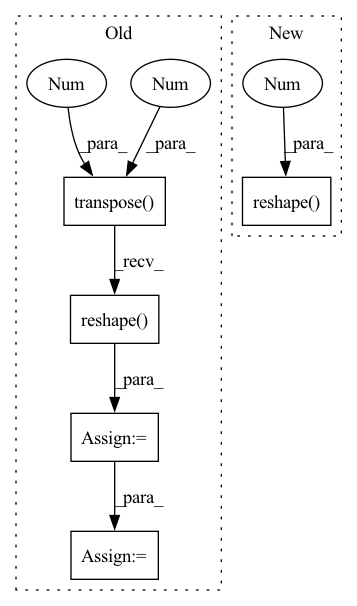

Pattern ID :28425

Before Change
F, _, KL = weight.shape
_, _, OL = grad_output.shape
grad_out_reshaped = grad_output.data.transpose(1, 2, 0).reshape(F, -1)
grad_weight = (grad_out_reshaped @ x_cols.T).reshape(weight.shape)
grad_x_cols = weight.data.reshape(F, -1).T @ grad_out_reshaped
grad_x_cols.shape = (C, KL, N, OL)
grad_x = col2im(grad_x_cols, x.shape, 1, KL, 0, stride)
return grad_x, grad_weight
After Change
num_filters, _, kernel_length = weight.shape
_, _, output_length = grad_output.shape
grad_weight = (grad_output.transpose(1, 2, 0).reshape(num_filters, -1) @ x_cols.T).reshape(weight.shape)
grad_x = np.zeros((batch_size, in_channel, signal_length), dtype=grad_output.dtype)
In pattern: SUPERPATTERN
Frequency: 3
Non-data size: 5
Instances
Fragment ID: 83801343
Project Name: pabannier/nanograd
Commit Name: 442722b1830cdbf5fe8874edf3ecce602b3e9526
Time: 2021-02-02
Author: pierreantoine.bannier@gmail.com
File Name: nanograd/nn/ops_cpu.py
M Class Name: AnonimousClass
N Class Name: AnonimousClass
M Method Name: conv1d_backward(5)
N Method Name: conv1d_backward(5)
M Parent Class:
N Parent Class:
M File Name: nanograd/nn/ops_cpu.py
N File Name: nanograd/nn/ops_cpu.py
M Start Line: 224
M End Line: 234
N Start Line: 224
N End Line: 239
'>
Before Change
c, r = torch.meshgrid(torch.arange(cols), torch.arange(rows))
c = torch.transpose(c.cuda(), 0, 1)
r = torch.transpose(r.cuda(), 0, 1)
points = torch.stack([c, r, depth])
points = points.reshape((3, -1)).T
points = points[mask.reshape(-1)] // shape = n_points, 3
// (5 - 10 ms)
start = time.time()
After Change
return inv_Tr
def project_disp_to_points(calib, disp, max_high):
mask = (disp > 0).reshape(-1).long()
disp = disp.clamp(min=0) + 0.1
// print( torch.sum(disp < 0) ) // Always False !!
baseline = 0.54
'>
Fragment ID: 83801194
Project Name: amrelsersy/stereo-3d-detection
Commit Name: 02583fa0a7bd1e3d1c8632688113329b81157122
Time: 2021-05-24
Author: mamoanwar97@gmail.com
File Name: Models/AnyNet/preprocessing/generate_lidar.py
M Class Name: AnonimousClass
N Class Name: AnonimousClass
M Method Name: project_disp_to_points(3)
N Method Name: project_disp_to_points(3)
M Parent Class:
N Parent Class:
M File Name: Models/AnyNet/preprocessing/generate_lidar.py
N File Name: Models/AnyNet/preprocessing/generate_lidar.py
M Start Line: 21
M End Line: 42
N Start Line: 21
N End Line: 33
'>
Before Change
batch_size = target.size(0)
_, pred = output.topk(topk, 1, True, True)
pred = pred.transpose(0, 1)
correct = pred.eq(target.view(1, -1).expand_as(pred))
// TODO: support tuple topk
// res = []
// for k in topk:
// correct_k = correct[:k].reshape(-1).float().sum(0, keepdim=True)
// res.append(correct_k.mul_(100.0 / batch_size))
correct_k = correct[:topk].reshape(-1).float().sum(0, keepdim=True)
res = correct_k.mul_(100.0 / batch_size).item()
return res
After Change
pred = pred.t()
correct = pred.eq(target.reshape(1, -1).expand_as(pred))
return [
(correct[: min(k, maxk)].reshape(-1).float().sum(0) * 100.0 / batch_size).item()
for k in topk
]
'>
Fragment ID: 83801288
Project Name: oneflow-inc/libai
Commit Name: 371360b9b903675607d2f92544962eb8b2330a17
Time: 2022-02-13
Author: 48727989+rentainhe@users.noreply.github.com
File Name: libai/evaluation/cls_evaluator.py
M Class Name: AnonimousClass
N Class Name: AnonimousClass
M Method Name: accuracy(3)
N Method Name: accuracy(3)
M Parent Class:
N Parent Class:
M File Name: libai/evaluation/cls_evaluator.py
N File Name: libai/evaluation/cls_evaluator.py
M Start Line: 31
M End Line: 49
N Start Line: 28
N End Line: 36